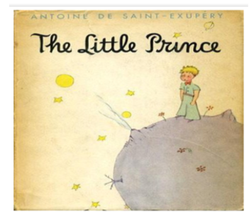

As the little prince dropped off to sleep, I too him in my arms and set out walking once more. I felt deeply moved, and stirred. It seemed to me that I was carrying a very fragile treasure. It seemed to me, even, that there was nothing more fragile on all Earth. In the moonlight I looked at his pale forehead, his closed eyes, his locks of hair that trembled in the wind, and i said to myself: "What I see here is nothing but a shell. What is most important is invisible..." As his lips opened slightly with the suspicion of a half-smile, I said to myself, again: "What moves me so deeply, about this little prince who is sleeping here, is his loyalty to a flower--the image of a rose that shines through his whole being like the flame of a lamp, even when is is asleep..." And I felt him to be more fragile still. I felt the need of protecting him, as if he gimself were a flame that might be extenguished by a little puff of wind ...
Get back to the All About Ronnie